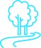

«Михаил Ломоносов»
Взгляни на мир
по-новому
Научно-популярный экскурсионный маршрут технической направленности предлагает уникальную возможность познакомиться с разнообразием научных направлений и открытий в области технических наук ведущих ученых Республики Башкортостан.

Продолжительность: 6 часов 35 мин
Протяженность: 140 км
Автор-разработчик: Машкова Е.А., Хайрулина Л.А., Саттарова Г.А., Ибрагимова З.Ф

Количество участников: группа до 15 человек

Категория экскурсантов: от 12 до 18 лет
МАРШРУТ ЭКСКУРСИИ:
Перемещение экскурсантов предполагается на экскурсионном автобусе

Визит-центр геопарка Торатау
Визит-центр геопарка Торатау
Ишимбайский район Башкортостана

Шихан Торатау
Ишимбайский район Башкортостана
Колодно-бортевая пасека
У подножия шихана Торатау, в 1 км
от визит-центра